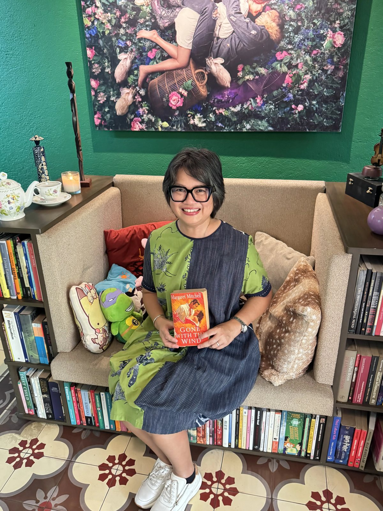

Make room for questions
Use everyday moments, books, and shared experiences to help children wonder, name what matters, and listen to another view.
Leadership in the home
At home, children notice how adults listen, make choices, meet uncertainty, and care for other people. Those everyday moments can become an early education in leadership.
Start a conversation →
A family practice
Leadership in the Home is a perspective for families who want to build curiosity, responsibility, reflection, and connection into everyday life. It begins with presence rather than perfection.
Reading and stories remain part of this work, not as an end in themselves, but as a way to open conversations, imagine other points of view, and practise attention together.
What this can look like
Use everyday moments, books, and shared experiences to help children wonder, name what matters, and listen to another view.
Leadership includes taking responsibility, apologising, and beginning again. Children learn this by watching it lived.
Small choices—how a family speaks, decides, and includes others—become a shared language for empathy and contribution.
For families, schools & communities
Dr Santi’s Story can shape a conversation, workshop, or learning experience around the questions your community is carrying.
Explore ways to work together →